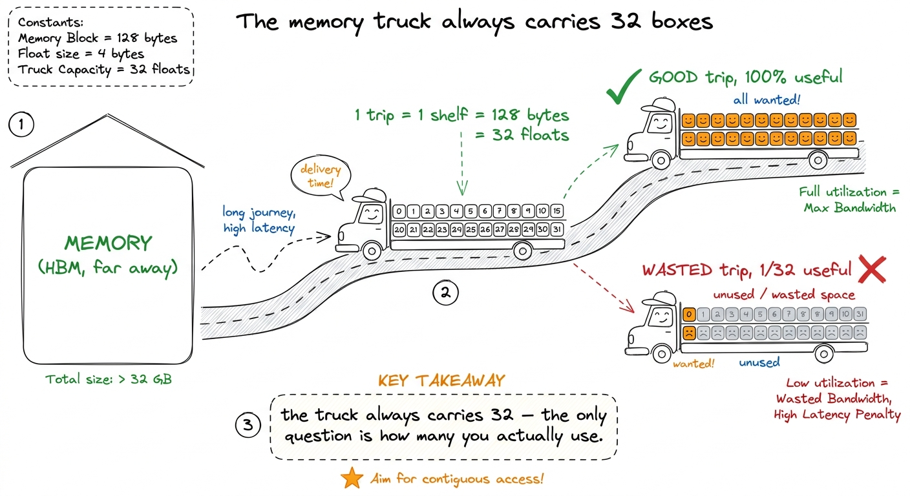
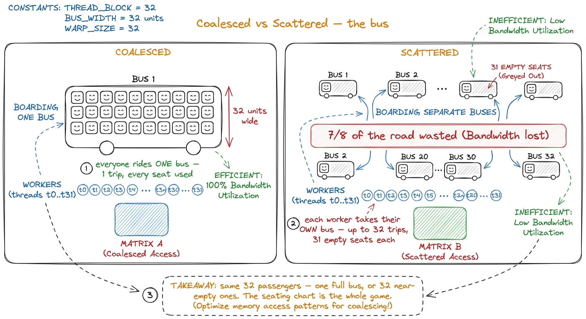
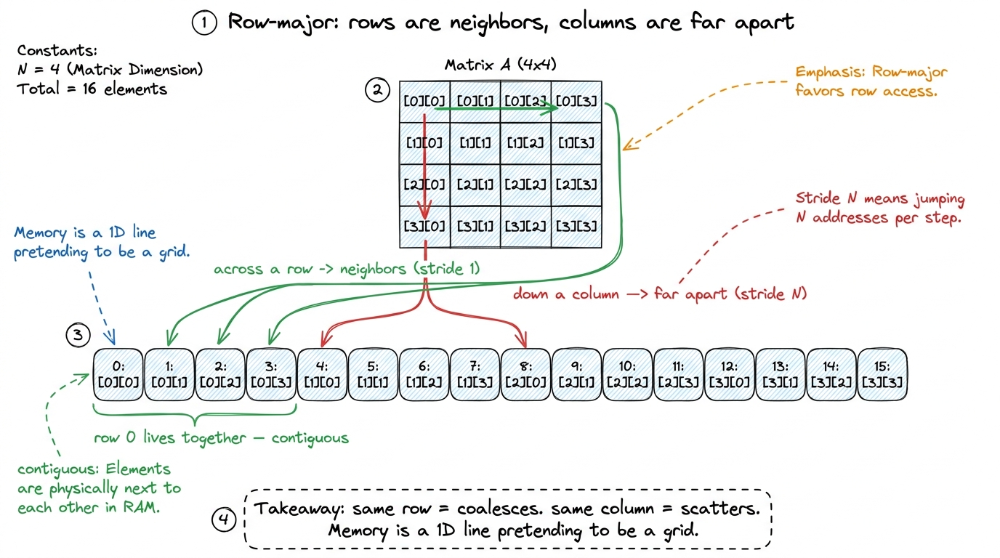
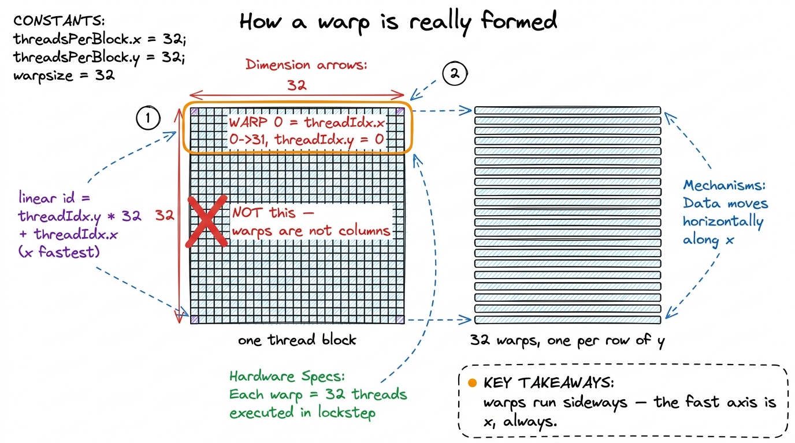
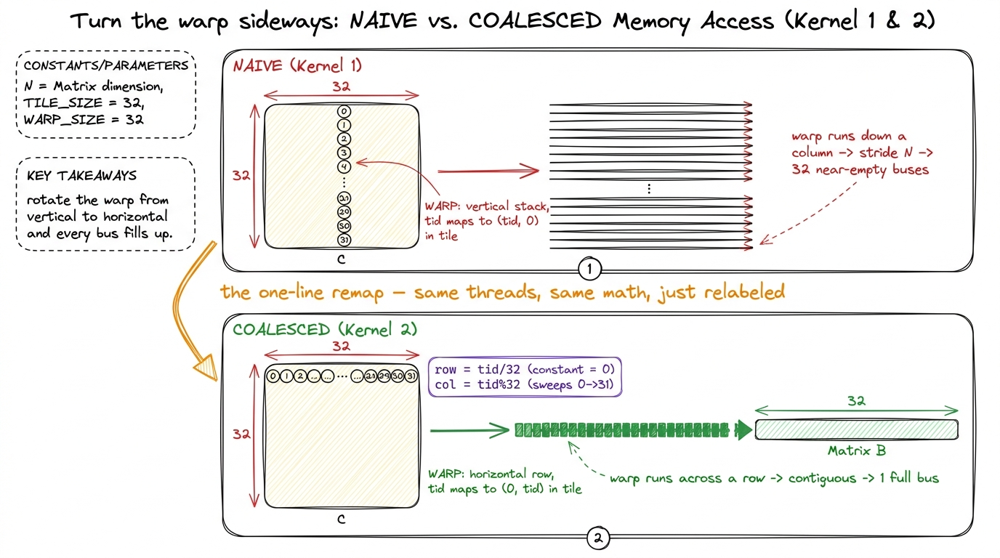
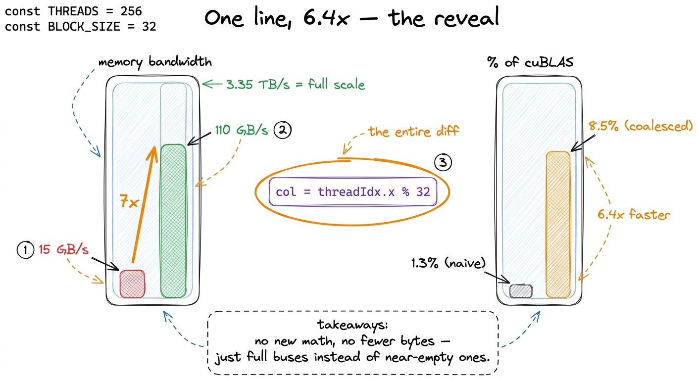
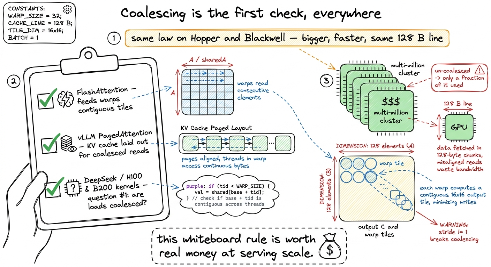

Teaching Kernel 2: the one-line miracle
By the end of this chapter you'll be able to stand at a whiteboard and teach the most magical moment in the whole workshop: the kernel where you change one line, don't remove a single calculation or a single byte, and the code runs about 6 times faster. Students won't believe it at first. That disbelief is the whole point — you're going to build the suspense, then reveal the trick, then draw the picture that makes it obvious. Let's learn it from zero.
This is Kernel 2 on the GEMM ladder. Kernel 1 was the naive matmul — one thread per output cell — and it ran at a humiliating 1.3% of what NVIDIA's own library (cuBLAS) can do. This chapter takes it to 8.5%, and almost nothing changes. That's what makes it unforgettable.
The setup: same math, we only change labels
Say this out loud at the start so nobody gets confused later: we are not changing the math. Same one-thread-per-output-cell. Same additions and multiplications. Same numbers loaded from memory. All we change is which thread computes which output cell — a relabeling of workers onto jobs. That relabeling is the entire optimization.
To teach this you need exactly one new fact about the hardware. Let's get it.
The one fact: the GPU reads memory in fixed-size chunks
Here's the thing students never guess on their own: a GPU does not fetch one number at a time. When it goes to memory, it always grabs a whole fixed-size block — even if you only wanted one number out of it.
That "shelf of 32" is real. On a modern GPU (Hopper, the H100 generation), memory moves in 128-byte lines — and a 128-byte line is exactly 32 floating-point numbers side by side (each float is 4 bytes; 32 × 4 = 128). One trip to memory brings back one 128-byte line, no matter what.

figure rendering · The one hardware fact the whole lesson rests on: memory always arrivesWhy a whole shelf at once? Because 32 threads run together. The GPU schedules threads in fixed groups of exactly 32, called a warp. A warp runs in lockstep — all 32 threads run the same instruction at the same instant. So on a "load from memory" instruction, the hardware looks at all 32 addresses the threads want and tries to serve them together.
The magic word: coalescing
Now — and only now, after the truck picture has landed — introduce the real term.
When the 32 threads of a warp ask for 32 numbers that sit right next to each other in memory, the hardware fuses all 32 requests into one single trip. Every box on the shelf is used. That's called a coalesced access — "coalesce" just means "merge into one." One warp, one instruction, one full 128-byte trip, zero waste.
When the 32 threads instead ask for numbers scattered far apart, the hardware can't merge anything. It makes up to 32 separate trips, and each trip drags back a whole shelf to deliver a single number. You use 1 out of every 32 boxes. You throw away the other 31. This is a strided (or "scattered") access — the bandwidth killer.

figure rendering · The emotional core of the chapter drawn as buses: 32 riders either shaNow the by-hand piece: why does a matrix stride the wrong way?
To see how the naive kernel splinters into scattered buses, students need one more small fact: how a matrix is laid out in memory.
A matrix is a 2D grid, but memory is a 1D line. So we flatten the grid into a line, one row after another. This is called row-major layout. Element A[row][col] lives at position row × N + col in the flat line. The consequence to burn into their heads:
- Numbers across a row (same row, next column) sit right next to each other in memory. Contiguous. Coalesces.
- Numbers down a column (next row, same column) sit N apart in memory. Scattered. Does not coalesce.

figure rendering · Why direction matters: a matrix is stored one row at a time, so walkinNow here's the trap in the naive kernel. In Kernel 1, the fast-changing thread index (the one that sweeps across a warp) was wired to the row of the output. So as the 32 threads of a warp step forward, they march down a column of the data — stride N, scattered buses, wasted trips. The lanes were pointed the wrong way relative to how memory is stored.
threadIdx.y and sweep threadIdx.x = 0..31. So a warp is a horizontal row of the thread block, not a vertical column. The fix-sentence: "warps run sideways — x first, always." Make them repeat it.
figure rendering · The technical translation of the common confusion: the hardware flatteThe one-line remap — the reveal
Build suspense before you show it. Tell them: "the naive kernel's warp runs down a column of memory — the scattered-bus disaster. All we have to do is turn the warp sideways so it runs across a row. And the way we do that is..." — then reveal the change.
Kernel 1 took the row and column from a 2D thread index. Kernel 2 flattens the block to 1D and splits the index by hand:
const uint BLOCKSIZE = 32;
const uint row = blockIdx.y * BLOCKSIZE + (threadIdx.x / BLOCKSIZE);
const uint col = blockIdx.x * BLOCKSIZE + (threadIdx.x % BLOCKSIZE);That's it. The whole optimization is row = threadIdx.x / 32 and col = threadIdx.x % 32. The % (remainder) is the operation that cycles fastest as threadIdx.x counts up: 0 gives 0, 1 gives 1, up to 31 gives 31, then it wraps. The / (integer divide) changes only every 32 steps. So within one warp — threadIdx.x running 0 to 31 — the row stays constant (all divide to the same value) and the col sweeps 0, 1, 2, …, 31. The warp now runs across a row. Sideways. Coalesced.
Take a breath here and make sure the students feel how little we did. We didn't add shared memory. We didn't tile anything. We didn't touch the loop that does the actual multiplying and adding. We changed two arithmetic expressions that compute a pair of indices — and those two expressions decide which direction 32 threads march through memory. That is the entire lever. The naive kernel chose its warp-to-data mapping by accident; Kernel 2 chooses it on purpose.
% and the /. (4) Trace threadIdx.x = 0,1,2,3 out loud: "row is 0, 0, 0, 0 — constant! col is 0, 1, 2, 3 — sweeping!" (5) Redraw the buses: now one full bus. (6) Then show the number. Don't show the speedup before the picture — the picture is what earns the gasp.Follow the change through all three arrays and it's the exact mirror of the naive kernel:
- B,
B[k*N + col]:colsweeps across the warp, so 32 threads read 32 adjacent numbers in a row of B. One full 128-byte bus. Coalesced. - A,
A[row*N + k]: all 32 threads share the samerowandk, so they want the exact same number. The hardware broadcasts one value to all 32 — cheap, no waste. - C,
C[row*N + col]: writes 32 adjacent cells per warp. Coalesced where it used to scatter.
Every access the warp makes is now either one full bus or one broadcast. Nothing splintered.

figure rendering · The whole trick in one image: the remap rotates each warp from runningLDG loads, same FFMA multiply-add. The only difference is the address arithmetic outside the loop. The speed isn't in doing less work. It's in the memory system finally filling every bus instead of running them near-empty. "Same instructions, different addresses" is the sentence that closes the loop.The measurement — the payoff
Now you can drop the numbers and they'll mean something, because the students already understand why.
- Memory bandwidth: ~15 GB/s → ~110 GB/s. The buses are full instead of 1/8 full. Over 7× more useful data per second.
- Overall speed: ~300 GFLOP/s → ~1990 GFLOP/s. From 1.3% → 8.5% of cuBLAS.
- The headline: a 6.4× speedup from relabeling threads. No new memory. No new instructions. No fewer bytes.

figure rendering · The payoff on two gauges: bandwidth 15 to 110 GB/s and 1.3 to 8.5 percIn production, right now
This isn't a classroom curiosity — coalescing is the first thing every real kernel engineer checks, on every kernel, forever. Before anyone reaches for a clever algorithm, they ask the boring question: are my warps reading contiguous, aligned memory? If the answer is no, no amount of cleverness downstream will save the kernel, because the memory system is quietly throwing most of its bandwidth away.

figure rendering · Where the one rule lives in production: FlashAttention, vLLM, and everAnd here's the honest caveat that sets up the next chapter. Coalescing made each trip full — but it did nothing about the fact that we take far too many trips. We still re-read the same numbers from far-away memory over and over (N times each). Kernel 2 fixed how we read; Kernel 3 (shared memory) fixes how often. That's the next rung, where the real climb begins.
1 If you keep a 2D thread block and just read threadIdx.y as the column and threadIdx.x as the row — the "swap x and y" trick — you get the identical coalesced layout. The explicit / and % on a 1D block are used here only because they make the warp-to-address mapping impossible to misread on a whiteboard.
Teaching notes: the board plan
Here's a clean 12-minute sequence for this block:
- (2 min) The truck fact. Draw the delivery truck with 32 slots. "The GPU always brings back a full shelf." Don't say "coalescing" yet.
- (2 min) By-hand 4 threads. Case A (addresses 100,101,102,103 → 1 trip) vs Case B (100,200,300,400 → 4 trips). This is the whole idea in miniature.
- (2 min) Row-major. Rows are neighbors, columns are far apart. Draw the grid flattening into a line.
- (2 min) The trap. Naive warp runs down a column → scattered buses. Draw them sad and empty.
- (2 min) The reveal. One line.
/32and%32. Trace threadIdx 0,1,2,3 out loud. Redraw as one full bus. - (2 min) The number. 15 → 110 GB/s, 1.3% → 8.5%, 6.4× faster. Then the FlashAttention/vLLM production tie.
l1tex__t_sectors_per_request dropping toward the ideal floor of 4 — that's the profiler literally showing the buses filling up.Checkpoint questions to confirm it landed: (1) "Why does reading down a column waste memory but reading across a row doesn't?" (2) "How many threads are in a warp, and which direction does a warp run — sideways or down?" (3) "Did we change the math or the number of bytes read? Then where did the speedup come from?" If they can answer all three, they own it.
You can now teach
- The one hardware fact — the GPU always fetches a full 128-byte line (a shelf of 32 floats) — using the delivery-truck / bus metaphor.
- Coalesced vs scattered access: 32 threads share one full bus, or splinter into 32 near-empty ones — the seating chart is the whole game.
- Row-major layout and why walking across a row coalesces but walking down a column strides by
Nand scatters. - The one-line remap (
row = tid/32,col = tid%32), traced by hand so students see the warp rotate from vertical to horizontal. - The payoff and the reveal choreography: 15 → 110 GB/s, 1.3% → 8.5%, a 6.4× speedup with no new math — and the "same instructions, different addresses" punchline.
- The production stakes: coalescing is the first thing checked in FlashAttention, vLLM, and every DeepSeek/H100/B200 kernel — worth real money at scale.